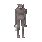

Troll

| Config name | troll |
| NPC id | 72 |
| Combat level | 69 |
| Hitpoints | 90 |
| Attack / Strength / Defence | 40 / 75 / 40 |
| Options | Attack |
| Aggression | cowardly |
| Wander range | 5 tiles from spawn |
| Max range | 7 tiles from spawn |
| Defined in | scripts/_unpack/225/all.npc |
| Bonuses | Attack bonus 20, Strength bonus 20, Crush def 10, Magic def 200, Range def 200 |
Troll
A hideously deformed creature.
Drops
Always dropped
| Item | Quantity | Rarity | Notes |
|---|---|---|---|
| 1 | Always |
Locations
This NPC is not placed on the map by the map files (it may be spawned by scripts, e.g. during quests, or be a variant).
Quests
Death Plateau Troll Stronghold
Referenced in scripts
scripts/general/scripts/quests.rs2scripts/quests/quest_death/scripts/death_ig_commander.rs2scripts/quests/quest_death/scripts/death_saba.rs2scripts/quests/quest_death/scripts/death_sherpa.rs2scripts/quests/quest_death/scripts/death_smithy.rs2scripts/quests/quest_troll/scripts/eadgar_troll_chief_cook.rs2scripts/quests/quest_troll/scripts/quest_troll.rs2scripts/quests/quest_troll/scripts/troll_champion.rs2scripts/quests/quest_troll/scripts/troll_journal.rs2scripts/quests/quest_troll/scripts/troll_spectator.rs2